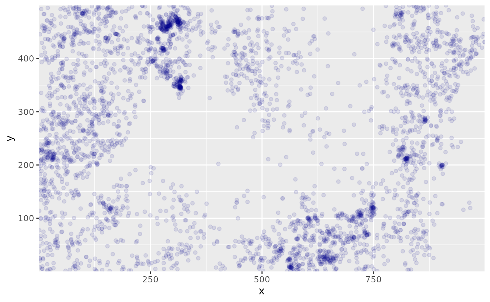
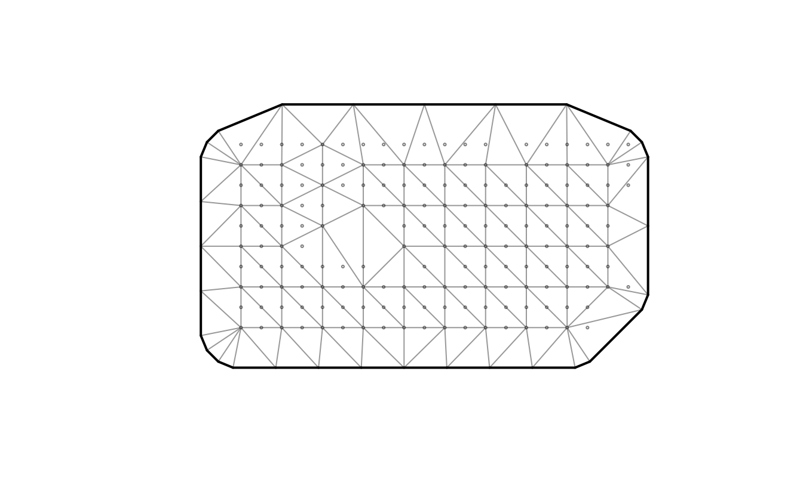
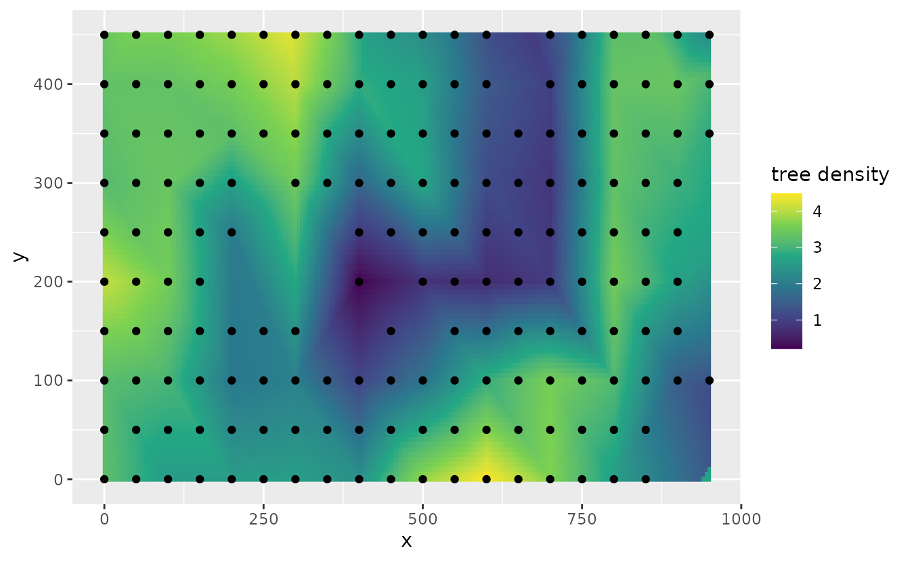

Forecasting with sdmTMB
Julia Indivero, Sean Anderson, Lewis Barnett, Philina English, Eric Ward, Jim Thorson
2025-11-22
Source:vignettes/articles/forecasting.Rmd
forecasting.RmdHere we will cover using sdmTMB for forecasting data in time or extrapolating spatially to unsampled areas. These forecasting approaches have multiple applications, including,
- predicting for future years
- interpolating over missed years
- extrapolating in space to unsampled areas (e.g., an area beyond the existing domain)
- interpolating in space within the existing spatial domain
Forecasting: predicting for future time and interpolating over missed time slices
Predicting for future time and interpolating over missed time requires a similar method, so we will cover them both here. To forecast in time, either future or missed time, we need a model for time. As an example, we can’t predict with years as factors below because the model won’t know what value to assign to years without data.
The options for including time in the model include:
- AR(1) or random walk random fields
- Random walk intercepts
- Smoothers on the time variable (e.g.,
s(year)) - Ignoring time (fixed)
- Some combination of these
We will use the Pacific cod data to show how to implement each of these options.
First, we need to make our mesh.
Next, we need to create a list of the years that we want to forecast or interpolate. The DFO survey in this region only includes years 2003, 2004, 2005, 2007, 2009, 2011, 2013, 2015, and 2017.
data <- pcod
years <- unique(data$year)To use the model to fill in Pacific cod density for the unsampled
years, we will create a list of the years we want added to fill in from
2003–2017. To predict for future years, we will also add in years for
after the observed data (i.e., after 2017) for however many years we
want to forecast into the future. For this example, we will predict on
years 2018–2025. We will name the vector of extra years
extra_years.
extra_years <- c(
2006, 2008, 2010, 2012, 2014, 2016, # missing years
2018:2025 # predicted future years
)Then, we will fit a model of Pacific cod density that includes depth
variables. The argument extra_time in the
sdmTMB() function is how we will add in interpolation and
forecasting. We also will need to set the argument time to
time = "year".
In this example, we will choose to turn off spatial random fields
(spatial = "off"), so we are only including spatiotemporal
random fields.
We then have different options for including time in the model.
AR(1) spatiotemporal field
To include spatiotemporal variation as an AR(1) process, we can
specify spatiotemporal = "AR1":
fit_ar1 <- sdmTMB(
density ~ depth_scaled + depth_scaled2,
time = "year",
extra_time = extra_years, #<< our list of extra years to be included
spatiotemporal = "AR1", #<< setting an AR(1) spatiotemporal process
data = pcod,
mesh = mesh,
family = tweedie(link = "log"),
spatial = "off",
silent = FALSE #< monitor progress
)Random walk spatiotemporal field
Or, we can set spatiotemporal variation to a random walk with
spatiotemporal = "RW":
Random walk intercept + AR(1) fields
We can also model the intercept as a random walk by removing the
intercept from the main formula (adding 0 to the model
equation) and including the argument time_varying = ~1:
fit_rw_ar1 <- sdmTMB(
density ~ 0 + depth_scaled + depth_scaled2, #<< remove intercept with 0
time = "year",
time_varying = ~1, #<< instead include the intercept here as a random walk
extra_time = extra_years,
spatiotemporal = "AR1", #<<
data = pcod,
mesh = mesh,
family = tweedie(link = "log"),
spatial = "off",
silent = FALSE
)Smoother on year + AR(1) fields
We can also add a smoother on year as a variable in the model
equation with s(year) in the model equation and keeping
spatiotemporal="AR1":
Deciding between methods
In deciding which method (AR(1), RW, etc) to use for including time in the model, it is important to know that
- AR(1) field processes revert towards mean
- Random walk processes (in the mean or time varying parameters) do not revert towards the mean
- Smoothers should be used with caution, because they continue whatever the basis functions were doing
- Uncertainties in prediction for random walks, AR(1) processes, and smoothers (here, p-splines) increase the further away we get from data
`project()`` function for faster long-term forecasting
Because forecasting can be slow—especially for large datasets or for
projections far into the future, sdmTMB also includes a
project() function for doing projections via simulations.
Using the built-in dogfish dataset, we’ll first define the
years for the historical (fitting) and projection period. This is based
off an approach first developed in the project_model()
function in VAST.
mesh <- make_mesh(dogfish, c("X", "Y"), cutoff = 30)
historical_years <- 2004:2022
to_project <- 5
future_years <- seq(max(historical_years) + 1, max(historical_years) + to_project)
all_years <- c(historical_years, future_years)
proj_grid <- replicate_df(wcvi_grid, "year", all_years)Next, we’ll fit the model. We’ll use an AR(1) spatiotemporal field that is responsible for future forecasts.
fit <- sdmTMB(
catch_weight ~ 1,
time = "year",
offset = log(dogfish$area_swept),
extra_time = historical_years, #< does *not* include projection years
spatial = "on",
spatiotemporal = "ar1",
data = dogfish,
mesh = mesh,
family = tweedie(link = "log")
)Finally, we’ll do the projections. We’ll only use 20 draws for speed and simplicity, but you should increase this for real-world applications so that you have stable results.
The out object now contains two objects:
out$est and out$epsilon_est, each with
dimensions of the number of rows in the prediction data
(proj_grid) (rows) and number of draws for this example (n
= 20) (columns). The first (est) are the predictions (in
link space) and the second (epsilon_est) is the
spatiotemporal random effects. These can be summarized and visualized in
several ways to show trends in both the mean, as well as the confidence
intervals.
For example, here are the projections:
proj_grid$est_mean <- apply(out$est, 1, mean)
ggplot(subset(proj_grid, year > 2022), aes(X, Y, fill = est_mean)) +
geom_raster() +
facet_wrap(~year) +
coord_fixed() +
scale_fill_viridis_c() +
ggtitle("Projection simulation (mean)")
See the help file ?sdmTMB::project for additional
examples.
Interpolating in space to unsampled areas
We can also interpolate predicted values to unsampled areas within the geographic extent of the data. For this example, we will use the data on the locations of 3605 trees in a 1000 by 500 m rectangular sampling region from the the spatst.data package
First we will create a data frame of the x and y coordinates from the tree dataset, and we can map the locations:
dat <- data.frame(
x = spatstat.data::bei$x,
y = spatstat.data::bei$y
)
ggplot(dat, aes(x, y)) +
geom_point(col = "darkblue", alpha = 0.1) +
coord_cartesian(expand = FALSE)
We first re-format the data to create density observations. We re-scale the x and y coordinates, using the size of the scale value to control the resolution (i.e., increasing the scale value will decrease the resolution). Then we can add a column in our data frame of tree density by adding the number of trees in each location that we created with the scale function. Then, we create the mesh and can visualize it by plotting.
# scale controls resolution
scale <- 50
dat$x <- scale * floor(dat$x / scale)
dat$y <- scale * floor(dat$y / scale)
dat <- dplyr::group_by(dat, x, y) %>%
dplyr::summarise(n = n())
mesh <- make_mesh(
dat,
xy_cols = c("x", "y"),
cutoff = 80 # min. distance between knots in X-Y units
)
plot(mesh)
Then, we can fit the model of tree density, with only an intercept and only one time slice
fit <- sdmTMB(n ~ 1,
data = dat,
mesh = mesh,
family = truncated_nbinom2(link = "log"),
)Next, we can predict to unsampled areas within the geographic extent of our data. We first expand the grid by adding in x and y coordinates between existing coordinates in our dataset. Here, we will add in points at intervals of 5 for x and y. This value controls the resolution of predicted data. Increasing the value will decrease the resolution of spatial predictions.
In this example, we include se_fit = TRUE in the predict
function to generate standard errors, though this can slow down
computation time.
We can map the predicted tree density at each of our interpolated points compared to the locations of our data to see the increased resolution by forecasting with this method
# makes all combinations of x and y:
newdf <- expand.grid(
x = seq(min(dat$x), max(dat$x), 5),
y = seq(min(dat$y), max(dat$y), 5)
)
p <- predict(fit, newdata = newdf)
ggplot(p, aes(x, y)) +
geom_raster(data = p, aes(x, y, fill = est)) +
geom_point(data = dat, aes(x, y)) +
labs(fill = "tree density") +
scale_fill_viridis_c()
We can also use add the argument nsim = 200 when
predicting and then summarize predicted densities from all simulations
in a matrix
p2 <- predict(fit, newdata = newdf, nsim = 200)
newdf$p2 <- apply(p2, 1, mean)
ggplot(newdf, aes(x, y)) +
geom_raster(data = newdf, aes(x, y, fill = p2)) +
geom_point(data = dat, aes(x, y)) +
labs(fill = "tree density") +
scale_fill_viridis_c()
We can also visualize uncertainty in the forecasts by mapping the standard error of predicted densities at each point in space. We see that uncertainty is higher at vertices. This is because there are fewer neighbors, e.g. this tutorial
newdf$est_se <- apply(p2, 1, sd)
ggplot() +
geom_raster(data = newdf, aes(x = x, y = y, fill = est_se)) +
coord_equal() +
labs(col = "Standard error\nof spatiotemporal field") +
scale_fill_viridis_c(option = "D")
#> Ignoring unknown labels:
#> • colour : "Standard error of spatiotemporal field"
Extrapolating outside the survey domain
We can also extrapolate spatially to outside of the geographic extent of the data (ensuring we are not extrapolating outside the extent of our mesh!) For instance, we can predict into a border area. To do so, we expand the x and y coordinates to values above and below the extent of the coordinates in the data. Here, we expand the geographic domain by 100 in all directions, and keep the resolution at 5.
Then, we can use the same model fit to predict to the expanded geographic domain.